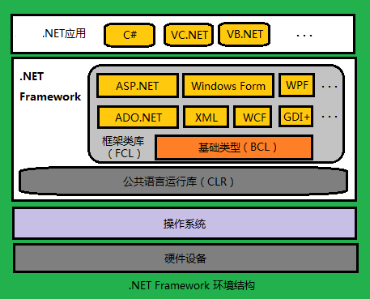

.NET Framework
.NET Framework 是 .NET 框架的一种实现（在windows平台上），用于代码编译和执行的集成托管环境。它包括两个部分：CLR（Common Language Runtime，公共语言运行时）和 FCL（Framework Class Library,.NET Framework Library类库）。公共语言运行时是.NET Framework 的基础。CLR可以看做一个执行时管理代码的代理，能够提供内存管理、线程管理等核心服务，并且还能强制实施严格的类型安全等来保证代码的准确性。以运行时为目标的代码称为托管代码，不以运行时为目标的代码称为非托管代码。类库是一个综合性的面向对象的可重用类型集合，可以用来开发命令行、GUI、基于ASP.NET的web窗体等应用。
环境的结构图：

这样的框架，使得不同的语言可以同时在一个项目里，支持多平台，而且提供了更安全的执行环境。
Common Language Runtime
CIL
CIL(Common Intermediate Language，也叫IL，公共中间语言)是.NET 兼容语言的源码编译成的中间语言，可以在任意的.NET运行时上运行，并且有安全的内存和类型检查。
CLR
CLR是 .NET framework 的核心，提供管理内存、线程执行、代码执行、代码安全验证、编译以及其他的系统服务。类似于JVM虚拟机，为IL提供运行环境。对于CLR来说，只看IL即可，而不用管IL由哪种语言编译而来的。CLR主要有JIT（实时编译器），GC（垃圾收集器）和BCL（基类库）等部分组成。
JIT：just in time，即时编译器，运行的时候将IL编译成二进制的本地语言
GC：垃圾收集器，实现内存管理回收垃圾等
BCL（base class Library）基础类库，一个公共的编程框架，实现了网络操作，I/O操作，文本操作，数据库操作，XML操作等最基础的类，为所有的框架提供基础支持。
CLI与CTS、CLS
由于过去语言和平台的不同，编译语言的内置类型各不相同，为了统一协作，必须有一组标准，这个标准就是CLI（Common Language Infrastructure，公共语言基础结构）。核心是
CTS（Common Type System，通用类型系统）和CLS（Common Language Specification，公共语言规范）。
CTS定义了在托管代码中一定会使用的类型特征，比如定义了一组内置类型以及每种类型的固有的独有的特征。
CLS详细说明了一个.NET兼容编程语言的规则、属性、行为，其主题包括数据类型、类结构、参数传递等。
遵循这个标准的语言，能够编译成IL，并可以在.NET框架里面就可以实现相互调用。
（CLI是一个国际标准，.NET只是CLI的一个具体实现）
托管代码与非托管代码
托管代码（managed code）与非托管代码（unmanaged code）：托管代码是IL，由CLR来运行管理，可以在不同的平台之间兼容，享受CLR提供的垃圾回收等服务。非托管代码是直接编译成的机器码，依赖于平台和语言，而且要自己实现垃圾回收等操作。
在.NET里的JIT和java的不一样，在.NET程序被载入内存后，如果某段IL是第一次被运行，JIT就会编译这段IL代码，全部编译成本地代码再执行（所以第一次启动很慢）。微软还附带了可以事先将IL编译成本地代码保存起来的工具，这样执行的效率也就跟静态编译的一样了。（而java是解释器，两者效率根本不同）。JIT的优化可以针对本地的CPU，在编译的时候进行优化。而非托管的代码提前编译的时候为了兼容通常使用通用的指令集。所以JIT充分利用CPU的附加指令，效率的提升是很可观的。
.NET Framework Class Library （FCL）
.NET Framework Library是一个与公共语言运行时密切结合的可重用的类型集合。一个面向对象的类库，大部分实现都引用了BCL的东西，是一个大粒度的类库，针对不同的应用程序设计的框架。
可以通过GCL用.NET framework开发以下应用：
- Console控制台应用
- Windows GUI 窗体应用
- Windows Presentation（WPF）应用
- ASP.NET 应用
- windows服务
- etc….
参考链接
- .NET Framework 概述：https://docs.microsoft.com/zh-cn/dotnet/framework/get-started/overview